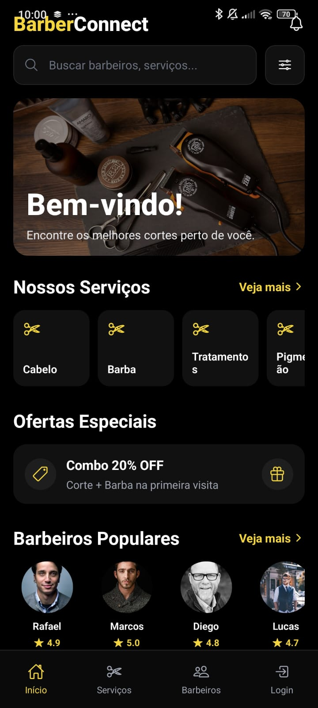
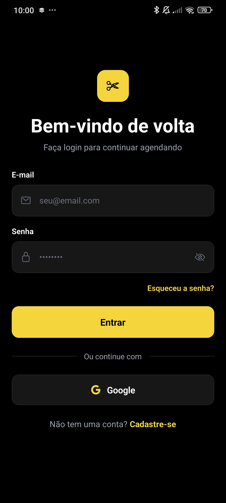
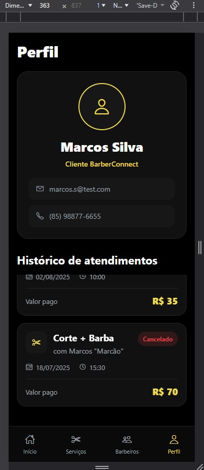

// projeto acadêmico · equipe de 5
BarberConnect
Plataforma de agendamento para barbearias, criada para um barbeiro de bairro que controlava a agenda no papel e no WhatsApp. Começou como painel web de gestão e evoluiu para aplicativo mobile, onde o cliente escolhe serviço, profissional e horário.
- Meu papel no app
- Front-end mobile: início e navegação de visitante, login e cadastro, perfil do cliente com histórico de atendimentos.
- Meu papel na versão web
- Telas do painel, integração com a API e documentação Swagger.


